Every backdrop in the library, animated. The app also tints its panels to match; this page shows the scenes only (themes with colors only show their palette). Install and make your own.
abyss-lanternThe deep sea: sun shafts fading into the dark, glowing jellyfish, swaying kelp, bubbles and a passing school of fish. Dark./plugin install abyss-lantern --marketplace PerspicaciousGuy/ClaudeCodeThemes
arcade-hallA pixel-art arcade at night: rows of cabinets playing their own little games, neon tubes and a patterned carpet. Dark./plugin install arcade-hall --marketplace PerspicaciousGuy/ClaudeCodeThemes
art-decoA 1920s deco poster: a gold sunburst over deep navy, stepped towers with gold-lined windows, concentric fan arcs and a shimmer of light crossing the gold. Dark./plugin install art-deco --marketplace PerspicaciousGuy/ClaudeCodeThemes
aurora-fieldNorthern lights over a frozen lake ringed by pines, with twinkling stars and the odd shooting star. Dark./plugin install aurora-field --marketplace PerspicaciousGuy/ClaudeCodeThemes
autumn-forestA forest in autumn at golden dusk: trees in red, orange and gold, leaves spiraling down, slanting light and a carpet of fallen leaves. Dark./plugin install autumn-forest --marketplace PerspicaciousGuy/ClaudeCodeThemes
bamboo-groveA bamboo grove in morning mist: tall green stalks in layers fading into haze, leaves swaying, slow light shafts and a few leaves falling. Light./plugin install bamboo-grove --marketplace PerspicaciousGuy/ClaudeCodeThemes
beacon-coveAn animated pixel-art theme that follows your clock: a lighthouse cape and sea from night through dawn, day and dusk, with a moving sun and moon, drifting clouds, a small boat and fireflies./plugin install beacon-cove --marketplace PerspicaciousGuy/ClaudeCodeThemes
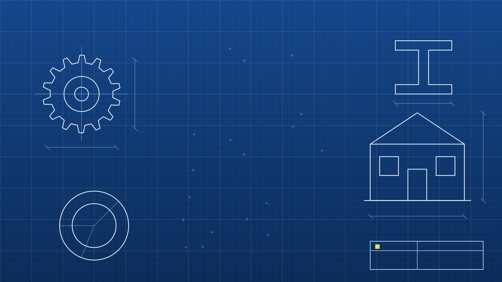
blueprintAn architect's blueprint: a fine grid on deep blue paper, with a gear, a house elevation, a beam section and a compass drawing that trace themselves in white line. Dark./plugin install blueprint --marketplace PerspicaciousGuy/ClaudeCodeThemes
campfireA night camp whose fire follows your 5-hour usage window and whose woodpile follows your context window: a roaring fire when plenty is left, embers when you are near the limit. A live theme. Dark./plugin install campfire --marketplace PerspicaciousGuy/ClaudeCodeThemes
cassette-futurismA 1980s vision of the future: an amber monochrome console with a sweeping radar, a spectrum, scrolling data, turning cassette reels, blinking lights and scanlines. Dark./plugin install cassette-futurism --marketplace PerspicaciousGuy/ClaudeCodeThemes
circuit-boardA green circuit board: traces between pads and chips, bright pulses of light running along them and small LEDs blinking on their own beats. Dark./plugin install circuit-board --marketplace PerspicaciousGuy/ClaudeCodeThemes
circuit-board-calmA calm version of circuit-board: the same scene slowed to about 40% speed and softened under a veil, with heavier frosted panels, for when motion is distracting. Dark/plugin install circuit-board-calm --marketplace PerspicaciousGuy/ClaudeCodeThemescloud-seaSunrise above a sea of clouds: rolling banks of cloud drifting between dark peaks, a low sun, birds and a pastel sky from peach to blue. Light./plugin install cloud-sea --marketplace PerspicaciousGuy/ClaudeCodeThemescode-rainColumns of falling glyphs in phosphor green, bright at the head and fading behind, dimmer under the chat. Dark./plugin install code-rain --marketplace PerspicaciousGuy/ClaudeCodeThemescode-rain-calmA calm version of code-rain: the same scene slowed to about 40% speed and softened under a veil, with heavier frosted panels, for when motion is distracting. Dark/plugin install code-rain-calm --marketplace PerspicaciousGuy/ClaudeCodeThemes
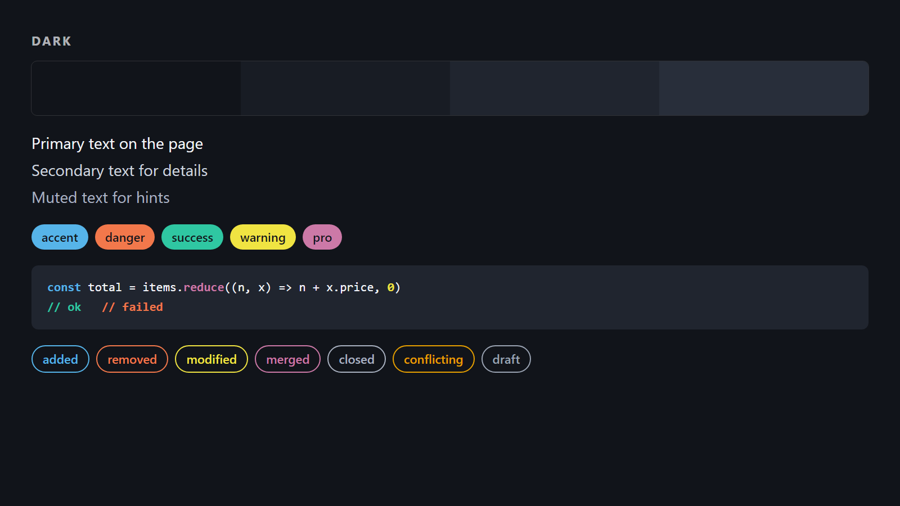
colorblind-safe-darkA dark theme whose colors stay apart for red-green and blue-yellow color blindness: blue and orange for added and removed, and a different lightness for each status. Colors only./plugin install colorblind-safe-dark --marketplace PerspicaciousGuy/ClaudeCodeThemes
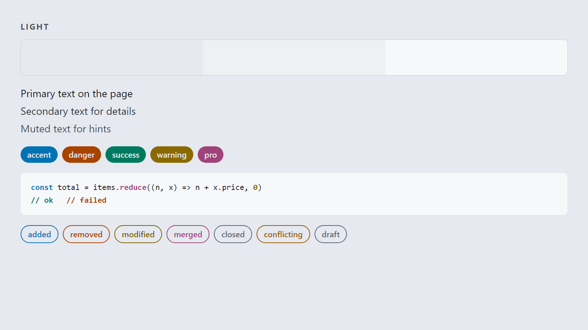
colorblind-safe-lightA light theme whose colors stay apart for red-green and blue-yellow color blindness: blue and orange for added and removed, and a different lightness for each status. Colors only./plugin install colorblind-safe-light --marketplace PerspicaciousGuy/ClaudeCodeThemes
constellationsA star map: rings and meridians of a celestial chart on deep blue, with constellations that draw themselves star to star, hold, then fade, and shooting stars. Dark./plugin install constellations --marketplace PerspicaciousGuy/ClaudeCodeThemes
contour-mapA topographic survey on warm paper: elevation lines draw themselves one height at a time around a flat basin. Light./plugin install contour-map --marketplace PerspicaciousGuy/ClaudeCodeThemes
contour-map-nightThe topographic survey in pale ink on blue-black paper, with the contours drawing themselves. Dark./plugin install contour-map-night --marketplace PerspicaciousGuy/ClaudeCodeThemes
coral-reefA sunlit coral reef: caustic light rippling over branching corals and sea fans, schools of bright fish, a clownfish in an anemone, a turtle gliding by and rising bubbles. Dark./plugin install coral-reef --marketplace PerspicaciousGuy/ClaudeCodeThemes
coral-reef-calmA calm version of coral-reef: the same scene slowed to about 40% speed and softened under a veil, with heavier frosted panels, for when motion is distracting. Dark/plugin install coral-reef-calm --marketplace PerspicaciousGuy/ClaudeCodeThemes
desert-nightA desert after dark: stars and a cold moon over blue-violet mesas, saguaros in silhouette, a campfire with sparks and an owl. Dark./plugin install desert-night --marketplace PerspicaciousGuy/ClaudeCodeThemes
desert-noonA bright desert at midday: red mesas, a pale sun, saguaros, heat shimmer, drifting dust and a tumbleweed. Light./plugin install desert-noon --marketplace PerspicaciousGuy/ClaudeCodeThemes
fog-valleyA misty mountain morning: blue ridges with fog drifting between them, low sun rays, a flock of birds and a far balloon. Light./plugin install fog-valley --marketplace PerspicaciousGuy/ClaudeCodeThemes
fog-valley-nightA misty mountain night: a moon over deep-blue ridges, pale fog drifting between them, fireflies in the pines and a sky lantern rising. Dark./plugin install fog-valley-night --marketplace PerspicaciousGuy/ClaudeCodeThemes
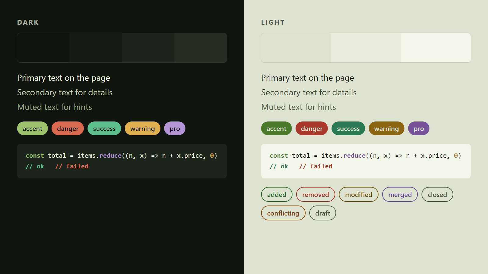
forest-floorMoss, bark and fern: a green-brown dark theme and a pale lichen light one, with a fern-green accent. Colors only./plugin install forest-floor --marketplace PerspicaciousGuy/ClaudeCodeThemes
forest-trailA pixel-art forest trail on a bright morning: sunbeams through layered trees, a winding dirt path, drifting mist, butterflies and falling leaves. Light./plugin install forest-trail --marketplace PerspicaciousGuy/ClaudeCodeThemes
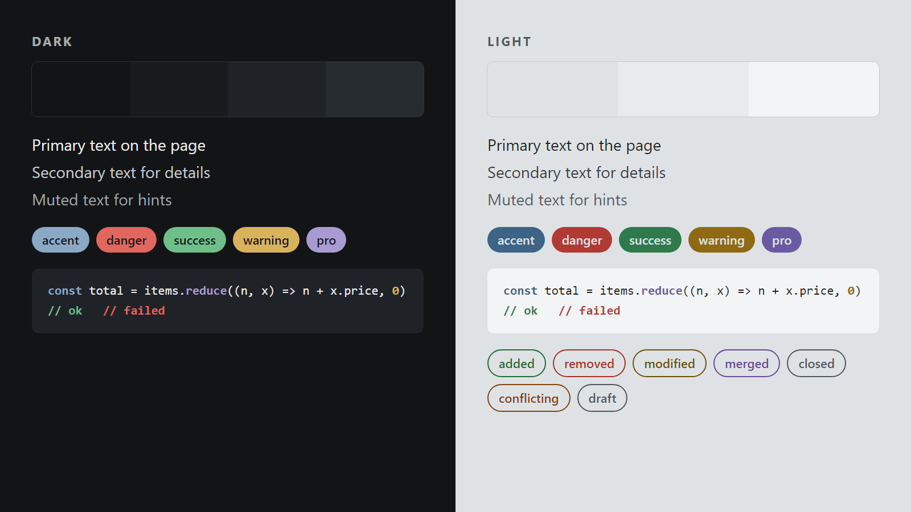
graphiteNeutral graphite grays with one steel-blue accent. Quiet and tool-like, light and dark, colors only./plugin install graphite --marketplace PerspicaciousGuy/ClaudeCodeThemes
greenhouse-rainA glass greenhouse at dusk in the rain: streaks and drops running down the panes, big leaves and ferns swaying inside, warm hanging lamps and a drifting mist. Dark./plugin install greenhouse-rain --marketplace PerspicaciousGuy/ClaudeCodeThemes
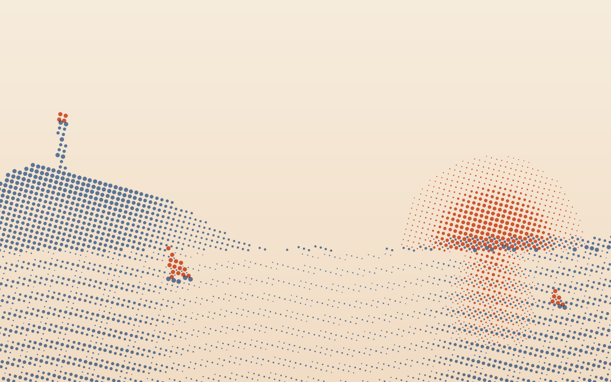
halftone-harborA two-ink halftone print of a harbor at sunset: a coral sun and its wake, blue water, a headland with a lighthouse, two boats. Light./plugin install halftone-harbor --marketplace PerspicaciousGuy/ClaudeCodeThemes
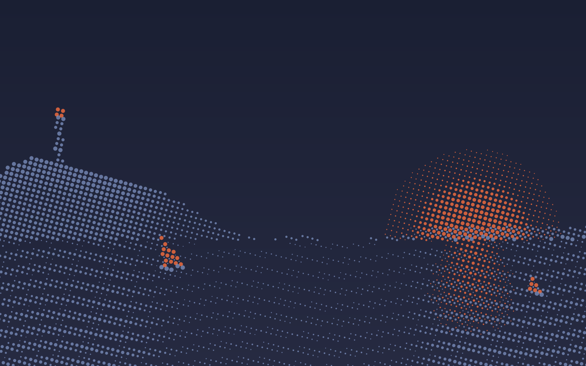
halftone-harbor-nightThe halftone harbor printed on night-blue stock: an ember sun and pale-blue water in breathing dots. Dark./plugin install halftone-harbor-night --marketplace PerspicaciousGuy/ClaudeCodeThemes
halloween-nightA haunted hill on Halloween: a huge orange moon, a crooked manor with flickering windows, bats, drifting ghosts, glowing jack-o'-lanterns and fog among the gravestones. Dark. A vector companion to haunted-manor./plugin install halloween-night --marketplace PerspicaciousGuy/ClaudeCodeThemes
harvest-moonA huge orange moon over a wheat field: wheat swaying in waves, hay bales and a barn in silhouette, crows crossing the moon and stars coming out. Dark./plugin install harvest-moon --marketplace PerspicaciousGuy/ClaudeCodeThemes
haunted-manorA pixel-art haunted manor under a huge moon: flickering windows, bats crossing the sky, a bare tree, drifting ground fog and an iron fence. Dark./plugin install haunted-manor --marketplace PerspicaciousGuy/ClaudeCodeThemes
hearthA warm theme: espresso and cream surfaces, terracotta accents, and a slow dusk backdrop with embers drifting up./plugin install hearth --marketplace PerspicaciousGuy/ClaudeCodeThemes
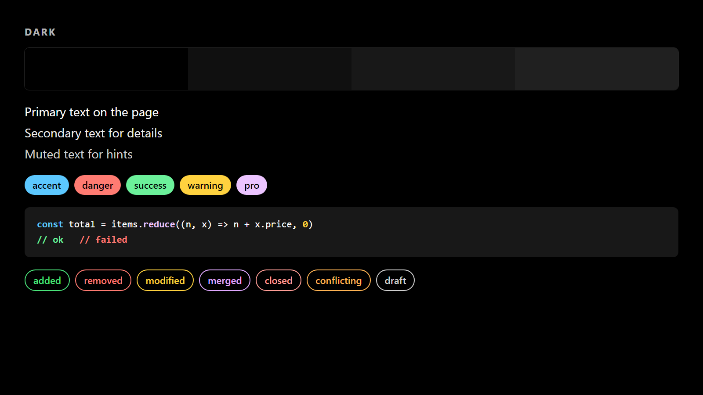
high-contrast-darkPure black and white with bright, saturated colors: text well past the AA bar on every surface, and strong borders. Dark, colors only./plugin install high-contrast-dark --marketplace PerspicaciousGuy/ClaudeCodeThemes
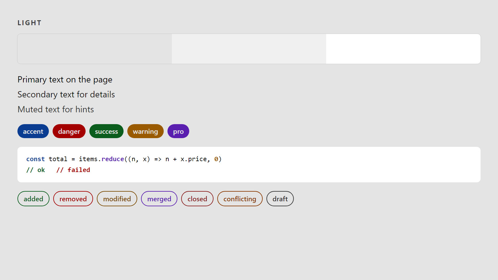
high-contrast-lightBlack on white with deep, saturated colors: text well past the AA bar on every surface, and strong borders. Light, colors only./plugin install high-contrast-light --marketplace PerspicaciousGuy/ClaudeCodeThemes
ink-washA sumi-e painting on rice paper: mountains in grey washes fading into mist, a pine branch, a lone boat, birds crossing and a red seal. Light./plugin install ink-wash --marketplace PerspicaciousGuy/ClaudeCodeThemes
isometric-roomA small isometric room at night: a desk with a glowing monitor and lamp, a plant, a bookshelf, a window onto a moonlit sky and a cat asleep on the rug. Dark./plugin install isometric-room --marketplace PerspicaciousGuy/ClaudeCodeThemes
koi-pondA koi pond seen from above at dusk: orange and white koi gliding in slow loops, lily pads with pink flowers, ripples spreading and petals drifting on dark water. Dark./plugin install koi-pond --marketplace PerspicaciousGuy/ClaudeCodeThemes
lantern-festivalA lantern festival on a lake at night: paper lanterns rising into a starry sky, their warm light shimmering on the water, a pagoda and hills in silhouette. Dark./plugin install lantern-festival --marketplace PerspicaciousGuy/ClaudeCodeThemes
low-orbitA pixel-art view of space: a ringed gas giant, a small moon, a nebula, parallax stars, a passing ship and shooting stars. Dark./plugin install low-orbit --marketplace PerspicaciousGuy/ClaudeCodeThemes
meadow-hoursA rolling meadow that follows your clock: dawn, day, dusk and night, with a moving sun and moon, butterflies by day and fireflies after dark. Dark./plugin install meadow-hours --marketplace PerspicaciousGuy/ClaudeCodeThemes
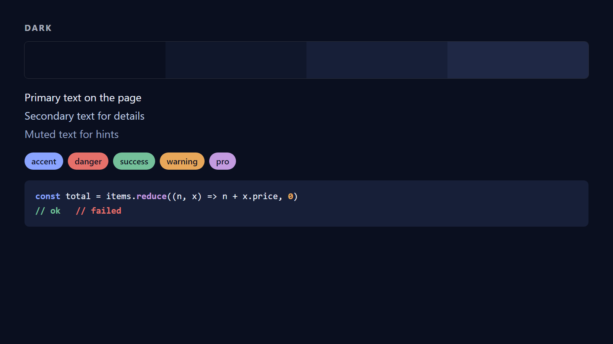
midnight-inkBlue-black ink with pale paper-white text and a periwinkle accent. Dark, colors only./plugin install midnight-ink --marketplace PerspicaciousGuy/ClaudeCodeThemes
moonlit-shoreA pixel-art beach at night: a moon and its glitter on the sea, stars, a campfire with sparks, a lantern boat and a crab. Dark./plugin install moonlit-shore --marketplace PerspicaciousGuy/ClaudeCodeThemes
neon-rainA pixel-art city at night in the rain: towers with lit windows, buzzing neon signs, a wet street and a passing car. Dark./plugin install neon-rain --marketplace PerspicaciousGuy/ClaudeCodeThemes
neon-rain-calmA calm version of neon-rain: the same scene slowed to about 40% speed and softened under a veil, with heavier frosted panels, for when motion is distracting. Dark/plugin install neon-rain-calm --marketplace PerspicaciousGuy/ClaudeCodeThemes
new-year-fireworksNew Year's night over a city: rockets climbing and bursting in rings of colored sparks that fall as they fade, lit windows and stars through the smoke. Dark./plugin install new-year-fireworks --marketplace PerspicaciousGuy/ClaudeCodeThemes
new-year-fireworks-calmA calm version of new-year-fireworks: the same scene slowed to about 40% speed and softened under a veil, with heavier frosted panels, for when motion is distracting. Dark/plugin install new-year-fireworks-calm --marketplace PerspicaciousGuy/ClaudeCodeThemes
night-marketA pixel-art night market: strings of paper lanterns swinging over a lane, two glowing food stalls with rising steam, puddles that carry the light and a cat on a crate. Dark./plugin install night-market --marketplace PerspicaciousGuy/ClaudeCodeThemes
night-trainA night run seen from a carriage window: hills, town lights and telegraph poles sliding past under a thin moon. Dark./plugin install night-train --marketplace PerspicaciousGuy/ClaudeCodeThemesorigami-bayA bay made of folded paper: layered paper waves that drift, an origami sailboat bobbing, folded cranes flying across a paper sun and clouds. Light./plugin install origami-bay --marketplace PerspicaciousGuy/ClaudeCodeThemes
oscilloscopeAn oscilloscope screen: a glowing green graticule with a sine, a two-tone, a square and a triangle wave scrolling across and a cursor sweeping the display. Dark./plugin install oscilloscope --marketplace PerspicaciousGuy/ClaudeCodeThemesoscilloscope-calmA calm version of oscilloscope: the same scene slowed to about 40% speed and softened under a veil, with heavier frosted panels, for when motion is distracting. Dark/plugin install oscilloscope-calm --marketplace PerspicaciousGuy/ClaudeCodeThemespaperbackA well-read paperback: cream pages, brown-black ink and an ink-blue accent. Light, colors only./plugin install paperback --marketplace PerspicaciousGuy/ClaudeCodeThemespapercut-peaksFive sheets of colored paper layered into mountains, each casting a soft shadow, with paper clouds and birds. Light./plugin install papercut-peaks --marketplace PerspicaciousGuy/ClaudeCodeThemespapercut-peaks-nightThe paper-cut mountains in deep indigo under a paper moon and cut-out stars. Dark./plugin install papercut-peaks-night --marketplace PerspicaciousGuy/ClaudeCodeThemespirate-coveA pirate galleon in a sunny cove: a skull flag waving, gulls overhead, a far sail on the horizon and a treasure chest on a palm beach. Light./plugin install pirate-cove --marketplace PerspicaciousGuy/ClaudeCodeThemespirate-cove-nightA pirate galleon under a full moon: a skull flag waving, lantern light at the stern, a far ship on the horizon and a treasure chest glowing on a palm islet. Dark./plugin install pirate-cove-night --marketplace PerspicaciousGuy/ClaudeCodeThemespixel-cafeA pixel-art cafe on a rainy night: rain running down a big window over blurred city lights, warm pendant lamps, a steaming cup on the counter and a cat asleep on the sill. Dark./plugin install pixel-cafe --marketplace PerspicaciousGuy/ClaudeCodeThemesrainy-windowA night city seen through a rain-streaked window: soft bokeh lights, drops sliding down the glass, a warm lamp and a steaming mug. Dark./plugin install rainy-window --marketplace PerspicaciousGuy/ClaudeCodeThemesreading-roomA cozy library at night: tall shelves of books, a floor lamp with dust turning in its light, a candle, a cup of tea and a sleeping cat. Dark./plugin install reading-room --marketplace PerspicaciousGuy/ClaudeCodeThemesreal-skyA lakeside view under the sky outside right now: the sun crosses from sunrise to sunset by your clock, and at night the moon crosses in its real phase for today, with stars and its reflection in the lake. A live theme. Dark./plugin install real-sky --marketplace PerspicaciousGuy/ClaudeCodeThemesretro-gridA neon horizon: a slatted sun, wireframe mountains and a perspective grid that rolls toward you. Dark./plugin install retro-grid --marketplace PerspicaciousGuy/ClaudeCodeThemesrisographA risograph print: fluorescent pink, teal and yellow shapes overprinting on warm paper with halftone dots and slight misregistration, drifting as if the ink were still wet. Light./plugin install risograph --marketplace PerspicaciousGuy/ClaudeCodeThemesrooftop-gardenA pixel-art rooftop at golden hour: a pastel skyline, planters of sunflowers and tomatoes, string lights, birds on a wire and a kite. Light./plugin install rooftop-garden --marketplace PerspicaciousGuy/ClaudeCodeThemesrooftop-garden-nightA pixel-art rooftop after dark: a moon and stars over a skyline of lit windows, glowing string lights, fireflies and a lantern. Dark./plugin install rooftop-garden-night --marketplace PerspicaciousGuy/ClaudeCodeThemessakura-driftA spring dusk of pastel sky, misty hills and a blossoming tree, with petals drifting down. Light and dark./plugin install sakura-drift --marketplace PerspicaciousGuy/ClaudeCodeThemessnow-cabinA winter night: a log cabin with a lit window, smoke curling from the chimney, snowy pines and snow falling in three layers. Dark./plugin install snow-cabin --marketplace PerspicaciousGuy/ClaudeCodeThemessnow-cabin-dayA winter noon: a pale blue sky and low sun, white hills, a log cabin with smoke from its chimney and snow falling in three layers. Light./plugin install snow-cabin-day --marketplace PerspicaciousGuy/ClaudeCodeThemessnow-stationA pixel-art train station in a night snowfall: snow drifting past warm lamps, a slow night train on the far track, a glowing clock on the gable and a bench under the canopy. Dark./plugin install snow-station --marketplace PerspicaciousGuy/ClaudeCodeThemesspring-rainA soft spring rain over pale green hills: blossoming trees shedding petals, rain streaking through, puddles rippling under a pastel sky. Light./plugin install spring-rain --marketplace PerspicaciousGuy/ClaudeCodeThemesstained-glassA cathedral window at night: four arched lancets of jewel-colored panes in dark lead, a slowly turning rose window and light drifting across the glass. Dark./plugin install stained-glass --marketplace PerspicaciousGuy/ClaudeCodeThemessummer-firefliesA meadow at dusk: fireflies blinking and drifting over swaying grass, a thin moon, first stars and the last orange glow on the horizon. Dark./plugin install summer-fireflies --marketplace PerspicaciousGuy/ClaudeCodeThemessunny-shoreA pixel-art beach on a bright day: a pulsing sun, drifting clouds, a sparkling sea, rolling foam, palms, gulls and a crab. Light./plugin install sunny-shore --marketplace PerspicaciousGuy/ClaudeCodeThemestideA beach at dusk whose tide follows your 5-hour usage window: high water while plenty is left, then the sea draws back and leaves wet sand, rocks, tide pools and a stranded boat. A live theme. Dark./plugin install tide --marketplace PerspicaciousGuy/ClaudeCodeThemestide-poolLooking straight down into a rock pool: breathing anemones, starfish, rippling light, drops making rings and small fish. Dark./plugin install tide-pool --marketplace PerspicaciousGuy/ClaudeCodeThemestorch-dungeonA pixel-art dungeon wall: two flickering torches, a dark doorway with watching eyes, bats, a hopping slime and a treasure chest. Dark./plugin install torch-dungeon --marketplace PerspicaciousGuy/ClaudeCodeThemesukiyo-e-waveA Japanese woodblock print: a great wave curling over scale-pattern swells, boats riding the water, a red sun and a snow-capped mountain on cream paper. Light./plugin install ukiyo-e-wave --marketplace PerspicaciousGuy/ClaudeCodeThemesweather-moodA lighthouse on a rocky headland whose weather follows Claude: a clear calm night while it is idle, clouds and rain while it works (harder as the context window fills) and a flash of lightning when a tool call fails. A live theme. Dark./plugin install weather-mood --marketplace PerspicaciousGuy/ClaudeCodeThemesweekly-skyA lakeside cabin under a sky that crosses a whole day as your 7-day usage window is used: sunrise at the start of the week, noon in the middle, sunset as you near the limit and night when you reach it. A live theme. Dark./plugin install weekly-sky --marketplace PerspicaciousGuy/ClaudeCodeThemeswinter-lightsA snowy night dressed for the holidays: strings of colored lights twinkling in three phases, lit fir trees and a cottage, falling snow and a bright moon. Dark./plugin install winter-lights --marketplace PerspicaciousGuy/ClaudeCodeThemes